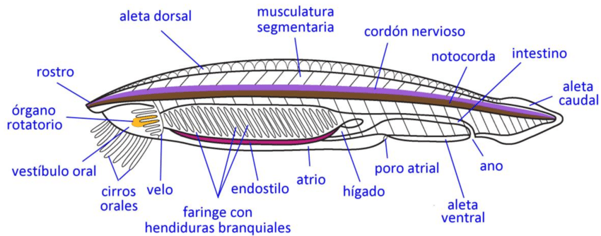
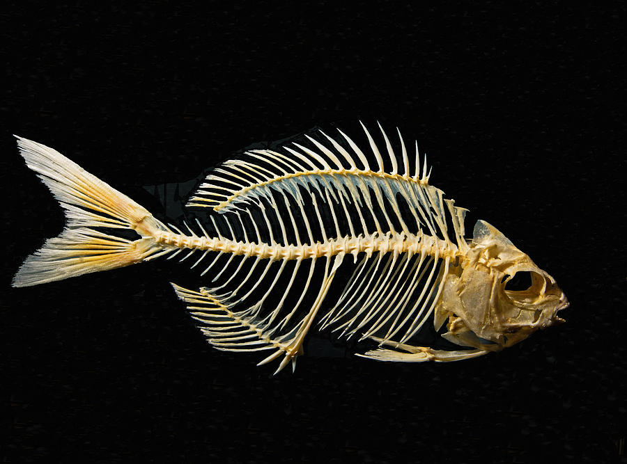
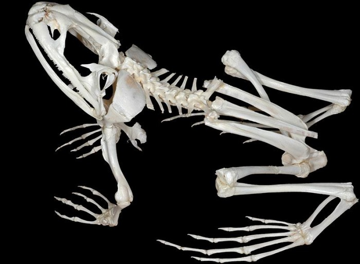
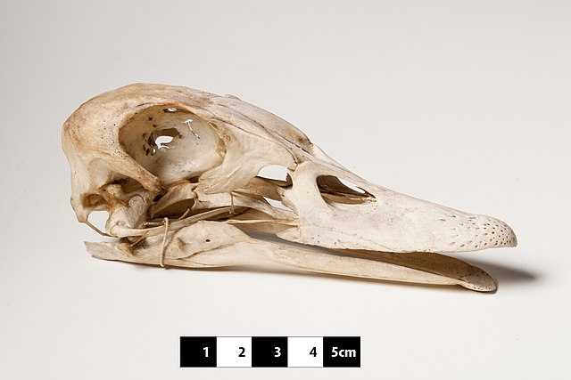
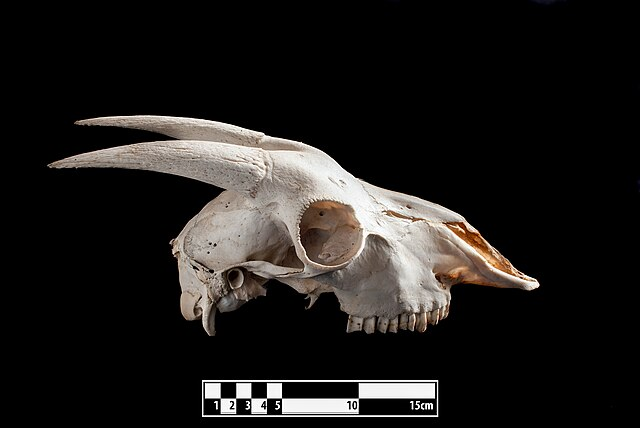

Bem-vindo, explorador(a) da diversidade animal! Nesta aula prática, nossa missão é desvendar as características que definem o grupo Vertebrata, situando-o em seu devido lugar na árvore da vida. Ao final dos 80 minutos, você será capaz de:
Identificar as apomorfias (novidades evolutivas) chave dos vertebrados.
Diferenciar um vertebrado de outros cordados e deuterostomados.
Reconhecer a unidade e a diversidade do plano corporal dos vertebrados.
Seu material de apoio são os espécimes na bancada, os Atlas de AFV. Use este roteiro como seu guia. Vamos começar!
II. Analisando os Parentes Próximos (~20 min)
Para entender o que é um vertebrado, primeiro precisamos conhecer quem não é. Todos os animais desta seção são Deuterostomados, assim como nós, mas eles nos mostram o caminho evolutivo até o surgimento das nossas características.
A. Estrela-do-mar (Filo Echinodermata)
A estrela-do-mar é nossa "prima" deuterostomada mais distante na bancada. Note sua simetria radial no adulto e seu endoesqueleto de placas calcárias logo abaixo da pele.
Na Bancada: Observe o exemplar de estrela-do-mar. Toque em sua superfície e tente sentir a rigidez do seu esqueleto interno.
Este animal possui alguma das 4 características de cordado (notocorda, tubo nervoso dorsal, fendas faríngeas, cauda pós-anal)?
Ele tem uma cabeça centralizada com um crânio?
B. Ascídia (Filo Urochordata / Tunicata)
As ascídias são cordados, mas sua anatomia adulta pode nos enganar. O adulto é séssil e parece uma bolsa filtradora. Contudo, sua larva é livre-natante e possui todas as características de cordado!
Na Bancada: Observe o espécime adulto de ascídia. Ele é o nosso parente vivo mais próximo!
No animal adulto, você consegue identificar uma coluna vertebral ou um crânio definido?
Por que, mesmo sem essas características no adulto, ele é considerado mais próximo de nós do que o anfioxo? (Dica: pense na genética e na forma larval).
C. Anfioxo (Filo Cephalochordata)
O anfioxo é o modelo de um cordado "clássico", mantendo as 4 características por toda a vida. Ele não é um vertebrado, e entender o porquê é o passo crucial desta aula.

Na Bancada: Observe o anfioxo no vidro e a lâmina histológica no microscópio.
No microscópio: Identifique a notocorda (um bastão celular grande e central), as fendas faríngeas (cortes na região da faringe). Também observe os pacotes musculares em forma de "V".
Questão Central: O anfioxo possui vértebras mineralizadas formando uma coluna? E um crânio protegendo a extremidade anterior do tubo nervoso? A resposta a estas duas perguntas define a fronteira para o próximo grupo.
III. A Fronteira: O Surgimento dos Craniata (~20 min)
Agora, vamos analisar um animal que representa os primeiros passos na evolução dos vertebrados: a lampreia. O grupo ao qual ela pertence (Agnatha) é o mais basal dos vertebrados vivos. Ela é um Craniata, mas não um Gnathostomata (vertebrado com mandíbula).
A. A Lampreia e o Crânio
Na Bancada e nos Atlas: Observe o exemplar de lampreia em via úmida. Ela é um "agnato", ou seja, um vertebrado sem mandíbulas. Use os Atlas para visualizar as estruturas internas que não são visíveis externamente.
O Crânio (A Apomorfia Chave): Diferente do anfioxo, a lampreia possui um crânio cartilaginoso que envolve e protege o encéfalo e os órgãos dos sentidos. Por isso, Vertebrata também é chamado de Craniata. Consulte o Atlas 1 (pg. 29-30) para visualizar a organização básica de um crânio.
B. E as Vértebras? Uma Apomorfia Complicada
Re-examine a Lampreia: Se "vertebrado" significa "aquele que tem vértebras", a lampreia se encaixa perfeitamente?
Ela não possui uma coluna vertebral ossificada como a nossa. Em vez disso, apresenta apenas pequenas peças de cartilagem posicionadas dorsalmente sobre a notocorda.
Ponto de Reflexão: Se os primeiros vertebrados não tinham vértebras "típicas", a presença de vértebras é realmente a melhor característica para definir o grupo como um todo? Ou a presença do crânio (Craniata) seria uma apomorfia mais universal e, portanto, mais adequada?
IV. Explorando a Diversidade dos Vertebrados (~20 min)
Agora, vamos confirmar a presença e a diversidade do crânio e da coluna vertebral nos principais grupos de vertebrados com mandíbula (Gnathostomata). O objetivo aqui é simples: reconhecer estas duas estruturas fundamentais em diferentes formas.
Na Bancada: Percorra as estações com os seguintes grupos. Para cada um, seu objetivo é identificar claramente o crânio e a coluna vertebral. Use os Atlas para ajudar na identificação geral.
Peixes Cartilaginosos e Ósseos
Observe os exemplares e os esqueletos completos sobre a bancada.

Anfíbios (Sapo)
No esqueleto do sapo, localize o crânio e a coluna vertebral, que é notavelmente curta e especializada.

Répteis e Aves
Explore a diversidade de formas de crânios e colunas vertebrais nos espécimes de lagartos, serpentes, tartarugas e aves.

Mamíferos
Identifique o crânio e a coluna vertebral no esqueleto de mamífero. Note como estas estruturas são robustas.

II. Proposição 1: "A Notocorda é a característica que une os Chordata, mas não é exclusiva deles."
Investigando o Plano Corporal Chordata
Para entender os vertebrados, precisamos primeiro entender os Cordados. O anfioxo é nosso modelo ideal.
Encontre as evidências no laboratório:
No microscópio (lâmina de anfioxo): Identifique as 4 características clássicas de Chordata: notocorda, tubo nervoso dorsal, fendas faríngeas e cauda pós-anal. Desenhe o que você vê.
Na bancada (ascídia): O adulto parece um cordado? Lembre-se que a larva possui todas as 4 características. Isso mostra que a presença dessas estruturas pode variar durante o ciclo de vida.
Na bancada (estrela-do-mar): Este é um Deuterostomado, mas não um Cordado. Você consegue encontrar alguma das 4 características nele? Sua ausência ajuda a definir os limites do grupo Chordata.
III. Proposição 2: "A principal inovação que separa os Vertebrados dos outros Cordados é o desenvolvimento de uma cabeça complexa."
Testando a Apomorfia "Craniata"
A grande novidade evolutiva não foi a coluna vertebral, mas a "cefalização": a concentração de estruturas sensoriais e neurais na região anterior do corpo, protegidas por um crânio.
Compare o Anfioxo com a Lampreia:
O anfioxo tem uma cabeça? Ele possui olhos com lentes, narinas pareadas ou um encéfalo complexo?
Agora, observe a lampreia. Mesmo sem mandíbulas, ela possui olhos bem desenvolvidos e uma cabeça distinta. A presença de um crânio cartilaginoso que protege o encéfalo na lampreia (e sua ausência no anfioxo) é a evidência chave que sustenta a proposição?
Por que o termo Craniata seria mais preciso que Vertebrata para definir este clado?
IV. Proposição 3: "A coluna vertebral, como a conhecemos, é uma característica dos Gnathostomata, e não de todos os Craniata."
A Questão das Vértebras
Se "Vertebrata" significa "aquele que tem vértebras", a lampreia complica essa definição.
Investigue a coluna vertebral:
Na lampreia: Ela possui uma coluna vertebral com corpos vertebrais que substituem a notocorda? Ou apenas elementos vertebrais rudimentares sobre uma notocorda persistente?.
Nos peixes (cartilaginosos e ósseos): Agora sim, observe uma coluna vertebral completa, com vértebras que envolvem e substituem a notocorda. Esta é a condição típica dos Gnathostomata (vertebrados com mandíbula).
Esta evidência sugere que o crânio surgiu antes de uma coluna vertebral completa?
V. Síntese da Investigação
Para organizar suas observações e preparar sua conclusão, teste seus conhecimentos preenchendo a tabela interativa abaixo. Selecione a opção correta para cada característica.
Animal
Grupo
Notocorda (no adulto)
Crânio Definido
Coluna Vertebral
É um Vertebrado?
Estrela-do-mar
Echinodermata
Ascídia
Urochordata
Anfioxo
Cephalochordata
Lampreia
Agnatha
Peixe Ósseo
Gnathostomata
Mamífero
Gnathostomata
Sua Conclusão Científica:
Com base nas evidências que você coletou e na tabela que preencheu, escreva um parágrafo definindo o que é um vertebrado (Craniata). Sua definição deve se basear nas apomorfias que você observou e justificar por que o crânio, e não as vértebras, é a característica definidora mais fundamental do grupo.
Ao final desta investigação, você não apenas decorou as características dos vertebrados, mas as descobriu através da análise comparativa, exatamente como os primeiros anatomistas fizeram.